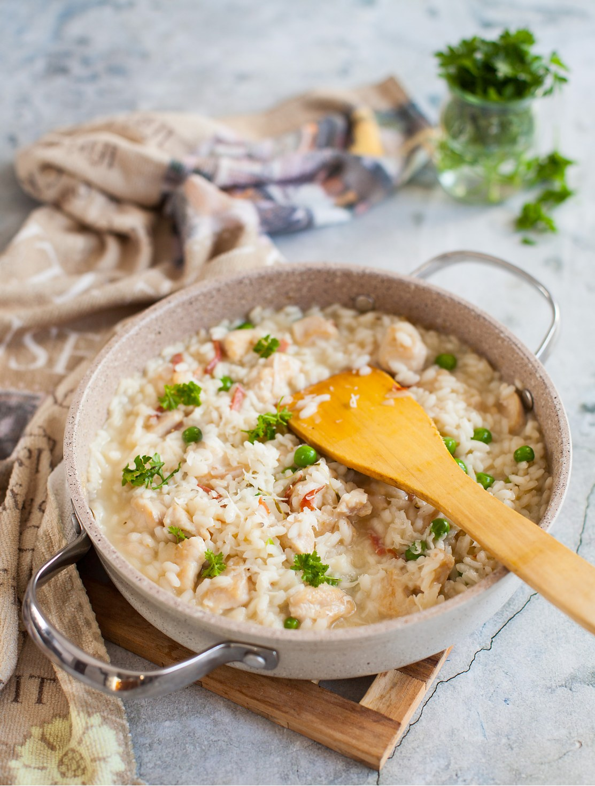

Что такое ризотто? Вроде все просто, что-то типа рисовой каши, но сколько нюансов нужно знать, чтобы приготовить его по-настоящему хорошо! Правильное ризотто похоже на горячую лаву, оно не должно быть сухим или слишком жидким. Кремовое — вот слово, лучше всего характеризующее ризотто. Но с характером, аль денте. Рис в ризотто кремовый снаружи, при этом слегка упругий внутри.
Секрет ризотто, прежде всего, в правильном рисе. Самые известные сорта риса для этого блюда — арборио, карнароли и виалоне нано. Рис содержит два вещества, которые отвечают за содержание крахмала, — амилозу и амилопектин. Рис, в котором амилопектина больше, чем амилозы, будет более кремовым. Рис для ризотто не промывают, так как крахмал, содержащийся на его поверхности, при соединении с жидкостью как раз и создает ту самую кремовую текстуру.
Есть что-то медитативное в приготовлении ризотто. Говорят, что после правильного риса перемешивание — еще один секрет. Но многие современные кулинары утверждают, что это миф, и вполне можно сразу влить весь бульон и особо не помешивать. Главное, чтобы сотейник был толстостенный, достаточно широкий и не слишком глубокий. Сохраните один половник бульона на всякий случай, не вливайте все сразу.
Давать в рецепте точное время до минуты — глупость. Ведь даже рис одного сорта от разных производителей поведет себя немного по-разному. Но знаете, что важнее всего, чтобы получилось вкусно? Не заморачиваться слишком сильно. Ризотто, приготовленное с любовью и из качественных ингредиентов, не подведет, даже если текстура будет чуть-чуть неидеальной.
Что еще делает ризотто кремовым? Добавление в конце приготовления сливочного масла и, конечно, пармезана. Качество сыра тоже важно: не любой сыр с названием «пармезан» подойдет для ризотто. Это должен быть достаточно зрелый твердый сыр, который хорошо крошится.
Добавив в ризотто курицу, из первого мы превращаем его во вполне самостоятельное и полноценное блюдо. В ризотто нам больше нравится использовать мясо грудки, оно нейтральнее по вкусу и лучше сочетается с сыром. Главное — не пересушить, для этого мы его предварительно обжариваем и добавляем на последнем этапе приготовления ризотто.
Еще один очень важный момент: подавать ризотто следует на подогретых тарелках. Их можно поставить в духовку, разогретую до 50–60 °С, и держать там до подачи.
Грибы. Грибы (шампиньоны, белые или лисички) можно использовать вместо горошка вместе с курицей, а можно сами по себе. Их можно обжарить до пассерования лука, как и курицу, положив затем в отдельную емкость и накрыв, либо на отдельной сковородке за 10 минут до окончания готовки ризотто, на оливковом или сливочном масле, не забыв посолить и поперчить.
Тыква и кедровые орешки. Тыкву нарезать небольшими кубиками (примерно 1 см). Добавлять тыкву лучше в момент закладки чеснока, чтобы она подрумянилась, а затем продолжила готовиться вместе с ризотто. Кедровые орешки подрумянить на отдельной сковородке на среднем огне в течение примерно 2–3 минут, посыпать ризотто при подаче вместе с дополнительной порцией пармезана.
Креветки и горошек. Креветки лучше всего обжарить на отдельной сковородке на разогретом оливковом масле за 10 минут до окончания готовности ризотто. Не забудьте посолить и поперчить. Можно добавить немного кайенского перца.